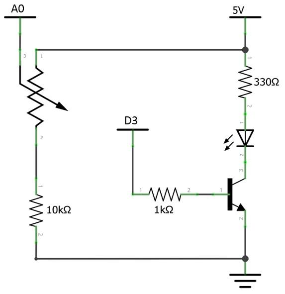
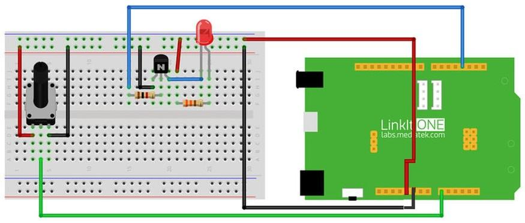

What We're Doing
In the previous sections, we learned how to control the circuit's input and output using digital interface. In this section, we will learn how to vary the output using an analog device called a potentiometer (also known as a variable resistor). A potentiometer is used to vary the voltage in the range of 0 ~ 5V. The MPU reads the voltage value in the range of 0-1023.This can be used to control the brightness of the LED (PWM simulation output interface). If the potentiometer is turned clockwise, the LED brightens gradually. If it is rotated anticlockwise, the luminosity fades.
Things you need
Schematic

Connection

Code
Please click on the button below to download the code for the kit:

You can unzip the file to the Examples folder of your Arduino IDE.
To access the demo code open:
File -> Examples -> Starter Kit for LinkIt -> Basic -> L6_Analog_Ctrl_LED
const int led = 3; const int pot = A0; void setup() { // nothing to initialize } void loop() { int val = analogRead(pot); // get value from potentiometer val = map(val, 0, 1023, 0, 255); // make the value to 0~255 analogWrite(led, val); // set the pwm of led delay(10); }
Troubleshooting
Making it better
To control flickering frequency of the LED with a potentiometer upload the following code To Open the demo code:
To open the demo code：
File -> Examples -> Starter Kit for LinkIt -> Extend_Lesson –> L6_Flashing_LED
More ideas
What else can do with the Potentiometer of the return value?
Reference